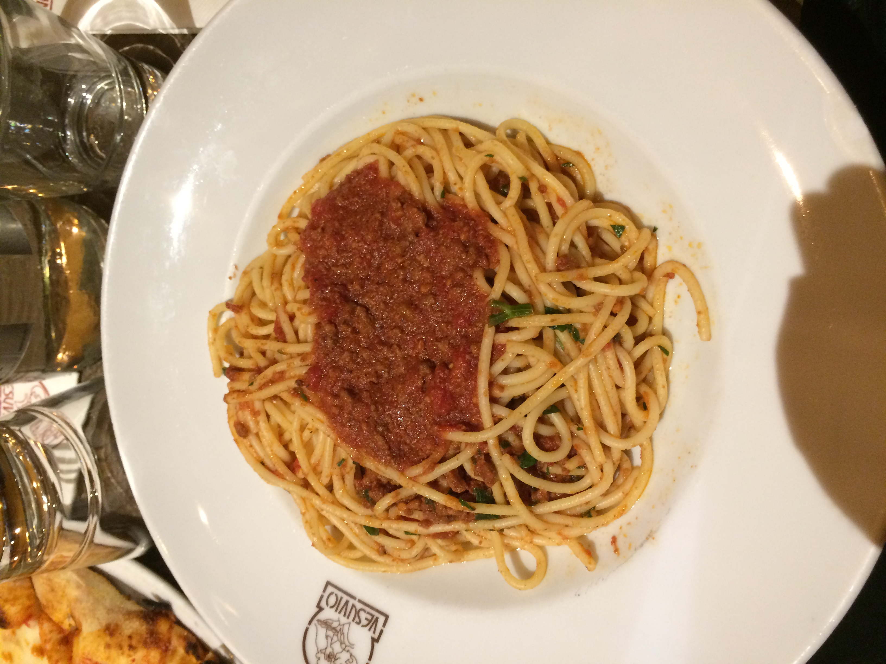

Mark Arvin Uy
There are a lot of things I want to talk to you about: how life is going, how our family is doing, a lot of updates and many other exciting things that have happened since I was in your shoes. However, the topic for discussion today is racialization. I know you probably have other things on your mind such as finding friends, doing well in school or your elementary crush. Its been a long time since 2008, and I’ve learned a lot of things since I was your age. Recently, issues about race have been on the rise lately. There’s been a lot of protests, a lot of unfair treatment of certain groups of people, and even Asian Americans like us have been targeted recently simply for how we look. But rest assured, thank God our family is safe. We experienced a lot of different things growing up due to our Asian American background that many other people probably would not have encountered. This and many other interactions between certain groups of people in society can be a product of racialization. I remember experiencing certain events as an Asian American child of immigrants thinking “this is normal” or “that’s just how it is” accepting it as being normal. One example of this “racialization” is when those kids used to tease you about your eyes. They squinted their eyes and pulled them back to mimic yours making fun of you and your Asian background. In shock, you just laughed it off and didn’t make too much of it. Eventually as these interactions progressed throughout your life, you accepted them as normal and even got to the point where you embraced these mockeries and even made fun of yourself to fit in with the rest of the crowd. You called yourself words like “chink” without even realizing that it’s a racial slur because you had become accustomed to hearing words like this. As an Asian American, a lot of this and other examples of racialization come from stereotypical concepts known as “the model minority” and “yellow peril.” These two concepts of racialization create an unhealthy seesaw for those of Asian American descent like us which can lead to interactions like what we experienced. According to our guest lecturer, Carol Park, the concept of “yellow peril” traces back many years to several immigration bans such as the Page Exclusion Act of 1875 and the Chinese Exclusion Act of 1882 which banned Asian women and Chinese people from immigrating to the US out of fear that these immigrants would take jobs. This “yellow peril” showed itself throughout history including the imprisonment of American Japanese citizens during WWII and has carried on to the present day which has even led to anti-Asian sentiment.
. An example of this anti-Asian sentiment includes the current rise of Asian American hate crimes to 150% in the past year in response to the Covid pandemic. Stereotyping Asian Americans by Yuko Kawai expounds on the source of “yellow peril” by pointing to the fear of certain people that Asians are a threat to American identity and western civilization. Our father used to say something similar growing up of why white people don’t like us, but you and I always assumed he was joking. When people bully you for your Asian background, it is good to keep this history and concept in mind, but use this knowledge to respond with understanding, love and progressive discussion with those who don’t understand rather than anger or violence. The “model minority” stereotype exists on the other end of the spectrum as a seemingly “positive” stereotype in the eyes of society although it has its own negative effects that come with it. Do you remember how mom and dad would always say “Asians work the hardest and we are known for our strong work ethic, that’s why so many Asians are successful.” From our perspective, our parents were living proof of this, immigrants who started without much yet somehow worked to get good jobs and provided for us. While I don’t deny the hard work and perseverance of our parents and plenty of other Asian immigrants, this idea of “model minority” was utilized by the media and the government to put down other colored communities which is terrible. In Stereotyping Asian Americans, Kawai explains the “model minority” myth by describing how the success of Asian Americans is used to deny any evidence of institutional racism and therefore puts down other racial groups who might have a harder time. The “model minority” stereotype also portrays our fellow Asian Americans as one dimensional and all the same. The stereotype asserts that we are all shy, smart, hardworking, quiet and as males, not masculine. I know you always joke about how you’re good at math because you’re Asian, and though it is funny, you are perpetuating that “model minority.” It is good to be mindful and cautious of how even simple jokes can play into model minority stereotype. Carol Park describes in her lecture about how this affects the portrayal of Asian Americans in Hollywood typically as nerdy sidekicks or exotic geishas as a one size fits all mold.
You’ve wondered why you never see any cool superheroes that looked like you or any characters in your favorite movies that represented your heritage, and sadly, this is because of the model minority stereotype in American media. Mom even always said,” of course there’s no Asian superheroes, this is America.” Your mixed cultural background of being mixed Asian and American at the same time has resulted you in hearing,” but where are you really from?” numerous times at your young age. Professor Leonard talks in his week 5 lecture about the label of “American-American” and despite one’s patriotism or love for their country, they would not be considered American-American just by the color of their skin or appearance. It may suck that not everyone sees you as American-American despite the fact that you were born here, but you are just as American as they are. It’s up to you to change the perception of society and those around you so that everyone of every skin tone will be equally known as simply “American.”
Experience
President
• Organized General meetings
• Lead board members spiritually and logistically
• Plan and organize events
Education
UC Riverside
Portfolio
Portfolio
